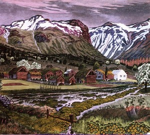

Литературно-худо́жественный стиль — функциональный стиль речи, который применяется в художественной литературе. Этот стиль воздействует на воображение, психику и чувства читателя, передаёт мысли и чувства автора, использует всё богатство лексики, возможности разных стилей, характеризуется образностью, эмоциональностью речи.
Художественные работы


Авторы
1